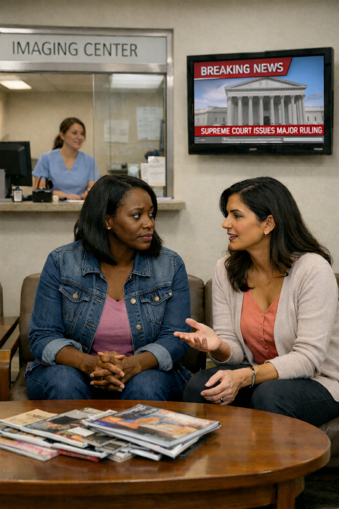

If this year felt heavier on your body, your mind, or your spirit, you’re not imagining it… and you’re not alone.
A reflection from IAWH Co-Executive Directors
This year reminded us of something women have always known about ourselves: we adapt, we endure, and we keep building, even when the rules change mid-stride - what else can we do?!
This year brought about some pretty wild policy shifts that nobody expected to hit as swiftly and as harshly as they did - from Executive Order rollbacks of diversity,
Federal Reduction in Force - 2025
equity, inclusion, and accessibility (DEIA) to DOGE reductions in force (RIFs) of federal public servants, led by an unelected official, from tariff tinkering that has brought on personal and business economic pressures to the promise of vacating vaccine schedules and the promotion of unsubstantiated medical warnings, from the brutal gutting of agencies that used evidence to protect our health and wellbeing without rhyme or rational reason, to the quiet institution of a social climate of fear, intimidation, and mistrust, where for melanated people, having second thoughts about the freedom to travel just to conduct everyday routine tasks has become as common as checking traffic and weather before going outside for fear of being snatched off of the street and much more. And even if these things mentioned didn't and still don't directly impact you, just the constant and worrisome beat of BREAKING NEWS and keeping track of the twists and turns of the court rulings and the announcement of one more outlandish and galling thing after another has been and continues to be mentally exhausting and emotionally draining. Still, women showed up for their families, their jobs, church, their communities, often carrying more than anyone could see, moving through uncertainty with quiet resolve.
Citizen confronted by over-policed streets.
If this year left you feeling more alert and on edge, more responsible, more stretched, that wasn’t a weakness. It was and is our bodies and spirit naturally resisting the wobbling of systems that for all of our lives have felt rock solid - foundational even. It is us compensating rather than capitulating. Stress is a negative energy that is not abstract; it finds its way into our sleep, blood pressure, mood, hormones, what we eat, how we move, and immune health. When the safety net gets thin, many of us hold the line ourselves, carrying the family's mental load, postponing appointments, working ungodly hours just to make ends meet and to afford spiking grocery prices and to be able to participate in the holidays. We often minimize our symptoms of failing health, putting everyone else first. We know we should do better.
Navigating times like these isn’t about perfection. It’s about intention. It’s choosing the basics when everything feels loud and out of control: honoring the health screenings you can manage, listening closely to new or persistent symptoms, finding the courage by yourself, with your partner, or with your best girlfriend to follow up on an abnormal test result, protecting your rest and movement in ways that fit our real lives, and naming stress and doing something to push it away instead of absorbing it. It’s also allowing yourself to lean on family, loved ones, and community, without apology. "I just can't juggle it all anymore. Something is going to drop. Can you help me?" Don't be afraid to just say it. We may be unbelievable skilled at managing it all, but we are human.

Waiting for follow-up breast exam
As we step into a new year, our hope is simple: that we extend ourselves more grace and less self-judgment. Pay attention to your body. Stay curious rather than fearful. Choose what is real and possible and sustainable over what is ideal, accepting and know that what you saw on Instagram was completely staged. And remember, your wellbeing is not a luxury it is a foundation.
For 2026, we are shaping our work around two priorities that emerged again and again over the past few years: breast health and the management of hypertension. We will be creating new opportunities to learn together, talk openly, and take practical steps toward prevention and control, because in times like these, community isn’t a nice-to-have, it’s how we stay well. We invite you to stay connected, sign up for programs, and be part of what we are building next.
Janine and I remain here with you, grounded in evidence, guided by care, and committed to walking alongside you into this new year and new season, wherever our health leads.
With care,
Cheryl & Janine
Co-Executive Directors, IAWH
Be sure to re-visit some of the IAWH monthly messages that trended in 2025.
This article first appeared on the IAWH Health blog on December 31, 2025 and is preserved here as part of the IAWH Health Journal archive. Information reflects what was known at the time of publication. This article is for general education and is not medical advice.